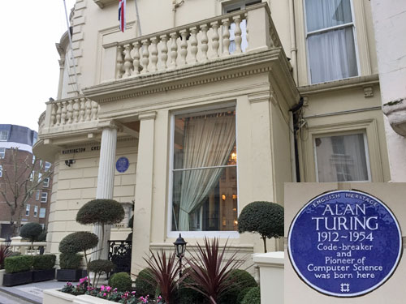
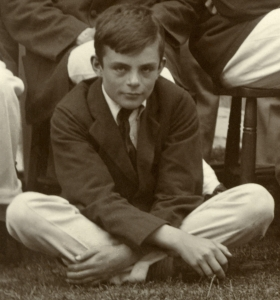
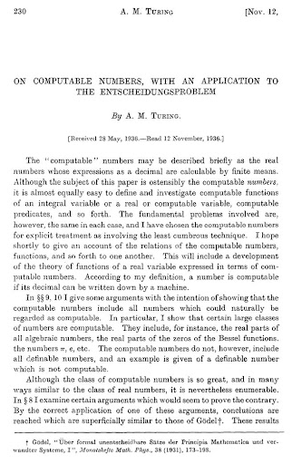
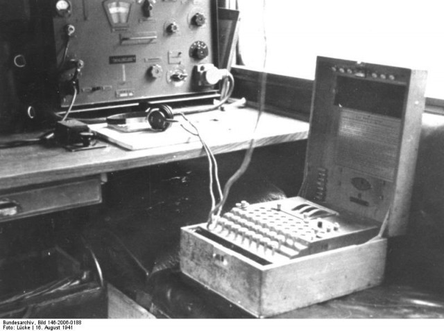

Alan Turing was born on June 23, 1912, in Maida Vale. During his childhood, he displayed
signs of unique and high intelligence in which certain teachers from Sherborne School, where Turing studied, noticed it from him.

When Turing turned 13 years old, he became more interested with the concepts of math and science. After
complete his studies at Sherborne, Alan Turing enrolled in the university of Cambridge in order to study
mathematics. Eventually, he was elected as a fellow upon graduation.

In 1936, Turing delivered a paper which is entitled "On Computable Numbers, with an Application to the Entscheidungsproblem."
This paper introduced the idea of a specific machine called Turing Machine (then eventually called as Modern Computer) that has the
capability of computing any existing entity that can be computed.

At a span of two years, Alan Turing studied mathematics with the professors at Princeton. He then received
his PH.D and returned to Cambridge in 1938 where he took a temporary position to an organization called the
Government Code and Cypher School.
By the age of 24, Turing started to work in cracking the Enigma Code which is considered as a
very difficult task to carry out. But in 1939, Turing broke the codes of the German Naval and the Air Force.
Because of his astounding skill in code-breaking, he was then recruited as an Enigma Code breaker for the organization of
Government Code and Cypher School, located at Bletchley Park.

Turing also contributed in designing a machine named "Bombe." The contribution made it possible in breaking
several German ciphers including ones that were utilized by Hitler's headquarters.